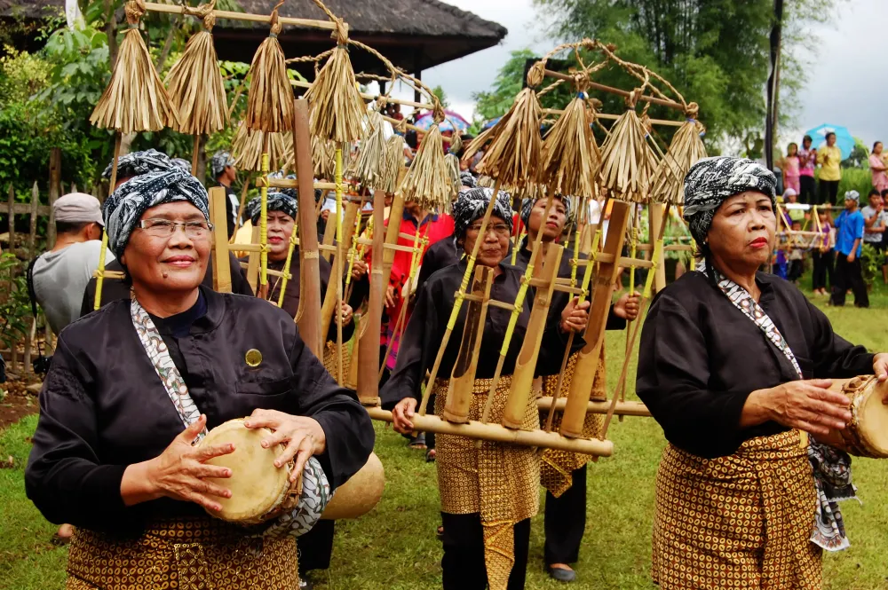

History of Seren Taun
The history of Seren Taun can be traced back to a time before the Sundanese people knew Islam. The ceremony is a legacy from their ancestors that is still preserved today.Initially, Seren Taun was only performed by Sundanese people who were farmers. However, over time, the ceremony began to be performed by the general public, including urban dwellers.
In the 15th century, Seren Taun became an official ceremony of the
Sundanese Kingdom. The ceremony was held annually to pray to Dewi
Sri, the rice goddess in Sundanese belief, for a bountiful
harvest.During the Dutch colonial period, Seren Taun was banned.
However, the ceremony was secretly preserved by the Sundanese
people.After Indonesia gained independence, Seren Taun was again
allowed to be held. The ceremony has become increasingly popular and
is one of the tourist attractions in the Kuningan Regency.
Read More